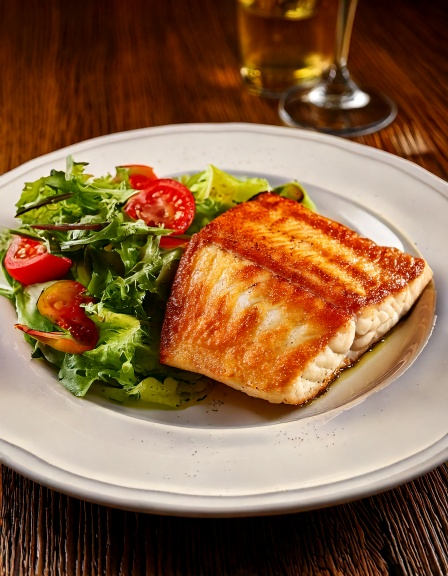

Un sencillo filete de pescado a la parrilla servido con una fresca ensalada al estilo uruguayo -- verdadera simplicidad costera, liviana y rápida para entre semana.
Información Nutricional (por porción)
280
Calorías
6g
Carbohidratos
34g
Proteína
14g
Grasa
2g
Fibra
~5
IG Est.
Por qué encaja en una dieta apta para diabéticos
Un filete de pescado a la parrilla con aceite de oliva y limón prácticamente no tiene carbohidratos por sí solo, y acompañarlo con una ensalada fresca de verduras en lugar de arroz o papas fritas mantiene todo el plato con un impacto glucémico casi nulo, sin dejar de ser una cena real y sustanciosa.
Ingredientes
- 44 filetes de pescado blanco (como merluza o lenguado)
- 3 tbsp45 ml aceite de oliva
- 2 tbsp30 ml jugo de limón fresco
- 6 cups6 cups hojas verdes mixtas
- 11 tomate, en rodajas
- 1/21/2 cebolla morada, en juliana fina
En la app
Registra comidas como esta, controla carbohidratos e índice glucémico automáticamente, y busca entre más de 3,700 platillos de 53 cadenas de restaurantes — gratis en la app de GlucoBeacon.
Instrucciones
- Sazona los filetes de pescado con sal, pimienta y un poco de aceite de oliva.
- Cocina a la parrilla o en sartén a fuego medio-alto, unos 3-4 minutos por lado, hasta que estén dorados y cocidos.
- Mezcla las hojas verdes, el tomate y la cebolla morada con el resto del aceite de oliva y el jugo de limón.
- Sirve el pescado caliente junto a la ensalada fresca.